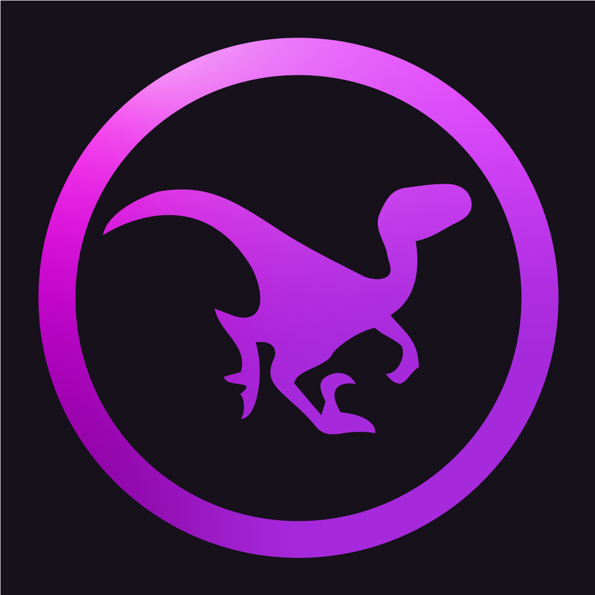

Wyn Price Wyn Price#0001
Wyn Price is the DumbCode programming mastermind, his efforts include programming the Mods, and the backend of the new DumbCode Studio.
Wyn Price Wyn Price#0001
Wyn Price is the DumbCode programming mastermind, his efforts include programming the Mods, and the backend of the new DumbCode Studio.

BrownBoiWonder Brownboiiwonder#0357
BrownBoiWonder is one of the teams' modelers and the project organizer. Without BrownBoiWonder, the project team would not be all in the same place working on the projects you know and love.

NeusFear @NeusFear#5173
NeusFear is the team's Web Developer, his primary responsibilities are to develop and keep the website updated; among other random things.

Hyperion @Hyper#5603
Hyperion is the main animator of DumbCode's mod Project: Nublar, his effors have brought to life most of the entities you've seen in our mods.
Harvey @TheHarvNut#6659
Harvey is one of DumbCode's Modelers and one of it's graphic design artists. His efforts mainly include modeling entities and creating promotional material for DumbCode's species showcases!

Maz @Mazikeen#7846
Mazikeen is one of Project Nublar's texturers, they are usually the first person to work on a texture for the mods' entities and Maz is there to make adjustments as the texture progresses through it's lifecycle.